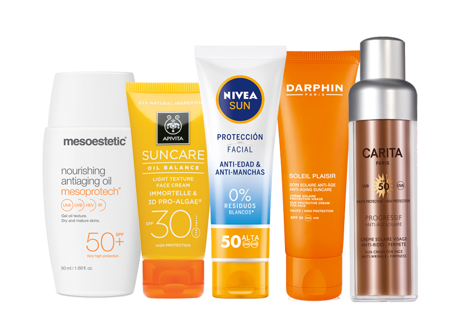
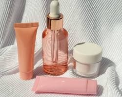
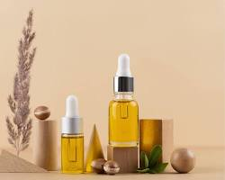
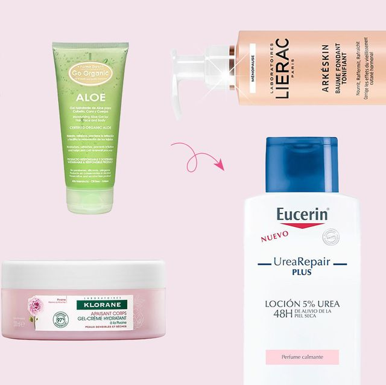
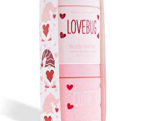

Los cosméticos de belleza pueden estar hechos de una variedad de ingredientes, incluidos ingredientes naturales, sintéticos y químicos. Es importante elegir productos que sean seguros para su tipo de piel y que no contengan ingredientes a los que sea alérgico o sensible.
Los cosméticos de belleza pueden ser una herramienta para aumentar la autoestima, la confianza y la seguridad en uno mismo.
CUIDADO DE LA PIEL,CABELLO,CORPORAL
PROTECTORES SOLARES
Protegen la piel de los dañinos rayos UV del sol, previniendo el envejecimiento prematuro y el cáncer de piel.
SÉRUMS
Contienen ingredientes concentrados para abordar problemas específicos de la piel, como arrugas, manchas oscuras o acné.
LIMPIADORES Y TONICOS

Eliminan la suciedad, el aceite y el maquillaje de la piel. Pueden ser en gel, crema, espuma o aceite y los tónicos yudan a equilibrar el pH de la piel y a eliminar cualquier residuo restante de limpieza.
CHAMPÚS

Limpian el cabello y el cuero cabelludo de la suciedad, el aceite y los productos para el cabello.
MASCARILLAS DEL CABELLO

Proporcionan un tratamiento intensivo para el cabello, generalmente se aplican una o dos veces por semana.
PRODUCTO DE STYLING

Ayudan a dar forma, definir y controlar el cabello. Algunos ejemplos incluyen gel, mousse, spray para el cabello y cera para el cabello.
LOTIONS
Hidratan la piel del cuerpo para mantenerla suave y flexible.
CREMAS CORPORALES
Proporcionan una hidratación más intensa para la piel del cuerpo.
EXFOLIANTES CORPORALES
Eliminan las células muertas de la piel del cuerpo para revelar una tez más fresca y brillante.
¡DIV DECORADOS! SERVICIOS
Peeling: Los peelings químicos o mecánicos eliminan la capa superior de la piel para revelar una nueva piel más fresca y tersa. Se pueden usar para tratar una variedad de problemas de la piel, como acné, arrugas y manchas solares.
Faciales:Los faciales son limpiezas profundas de la piel que ayudan a eliminar la suciedad, el aceite y las células muertas. También pueden incluir exfoliaciones, mascarillas y tratamientos hidratantes.
Microdermoabrasión:La microdermoabrasión es un tipo de exfoliación que usa cristales finos para pulir la piel. Se puede usar para tratar una variedad de problemas de la piel, como acné, cicatrices y líneas finas.
Maquillaje:El maquillaje se usa para mejorar los rasgos faciales y crear una apariencia específica. Se puede aplicar con una variedad de productos, como polvos, rubores, delineador de ojos y rímel.